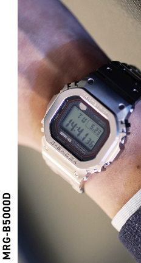
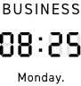
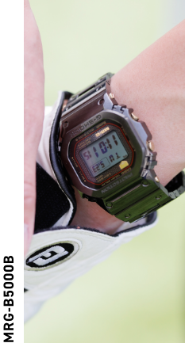
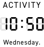
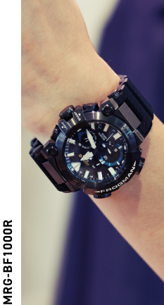
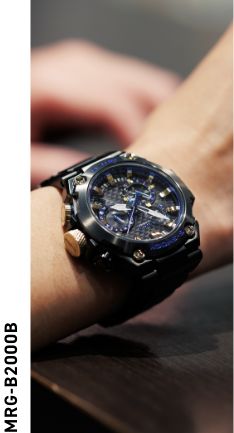
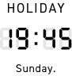

大人になったあなたに、
MR-Gというご提案。
初めてG-SHOCKを手にした瞬間を、
覚えていますか？
初めてG-SHOCKを手に入れた時の高揚感。
タフな相棒を腕に巻き、海に山に、学校、ドライブ、クラブ、
デート…日常の全ての時を共に刻んだ日々を覚えていますか？
大人になりスーツを着る機会が増えた。
後輩や年下の手前、カジュアルな時計は着けづらくなった。
そんな大人のG-SHOCKファンにこそ身につけてほしい。
あなたにぴったりな最高峰のMR-Gが、ここにあります。
スナップ






